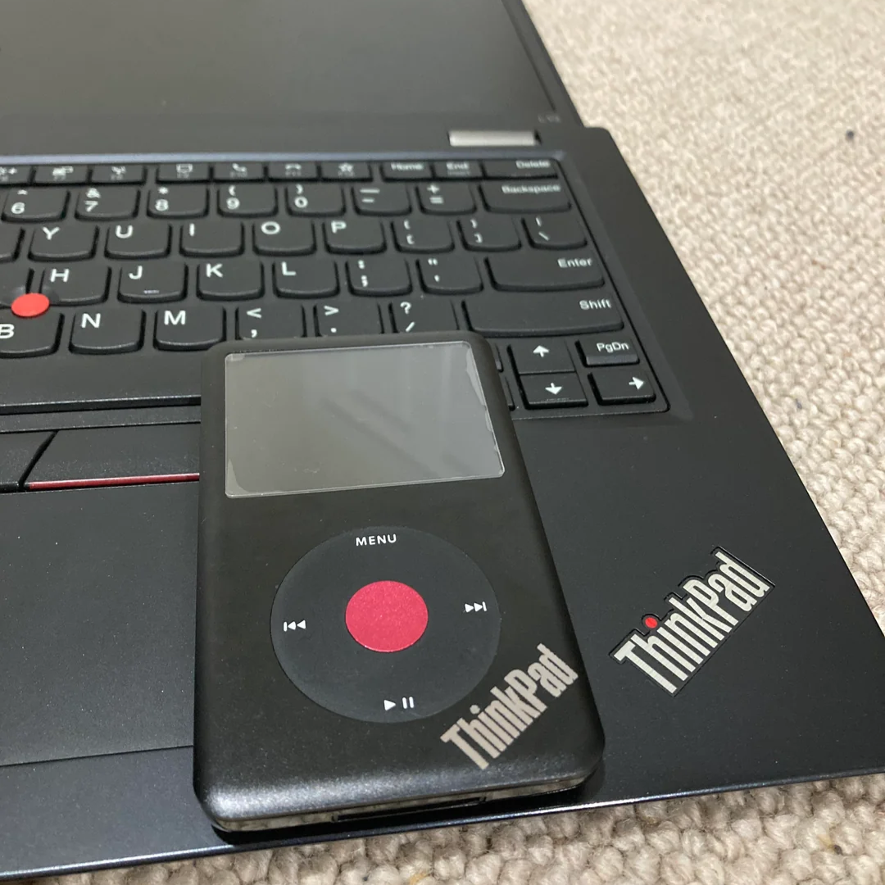
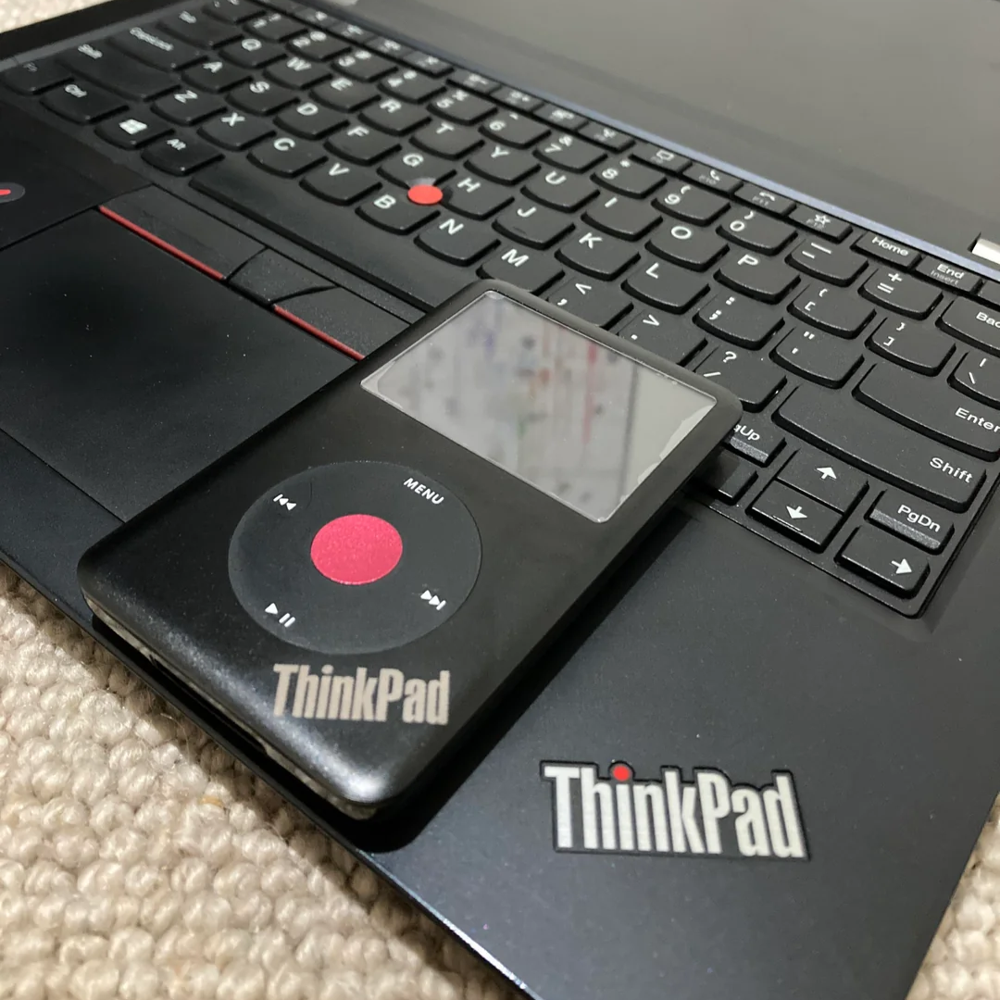

Amp: JVC VR-5525X


Turntable: Sony PS-LX300H


Cassette decks: AKAI GXC-36D, FEDERAL TCD-101


8 Track Decks: AKAI CR-81D, NATIONAL RQ-8


Speakers: "Rola Plessy" Drivers in a wood case someone else made about 40 years ago.

Earbuds: KZ zsn pro X (retired) Moondrop chu II (current)
7th Gen classic with a few mods;
iFlash solo
Red clickwheel
black front/back plate
Thinkpad logo laser engraved on a 37° angle on the front


I do not like/ do not use spotify since i dislike: the lack of focus on artists, low pay to artists, tons of adds and high subscription costs (i dont like subscriptions).
That's why i prefer to download my music Via Bandcamp, Steam and soundcloud. if i have to, mostly for game soundtracks, i will use khinsider.com for gameripped soundtracks.
That's usually because they dont get uploaded online so you have to do some sailing to get them.
All the music i download goes on my iPod which i connect up to my HIFI when i am at home, and listen through my earbuds when not at home.